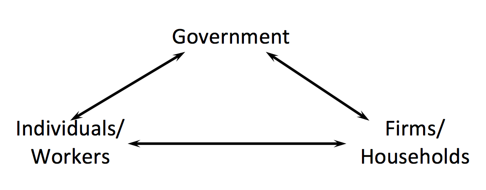
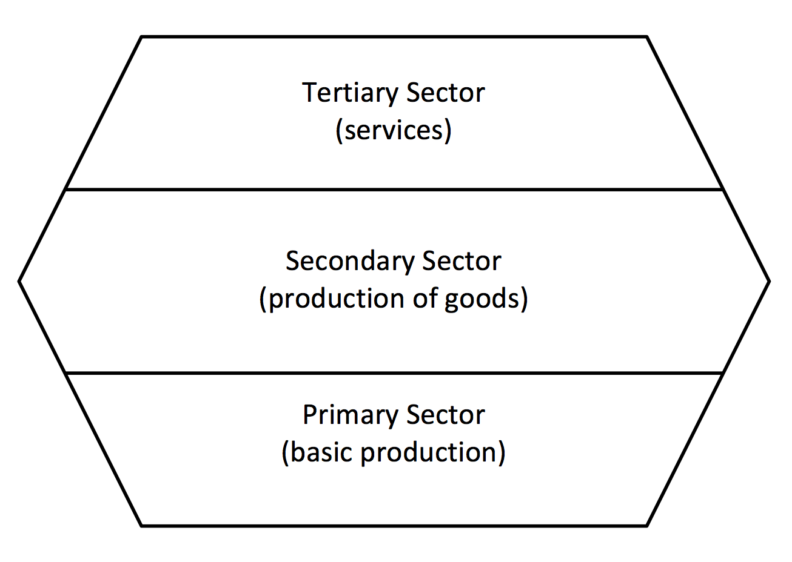
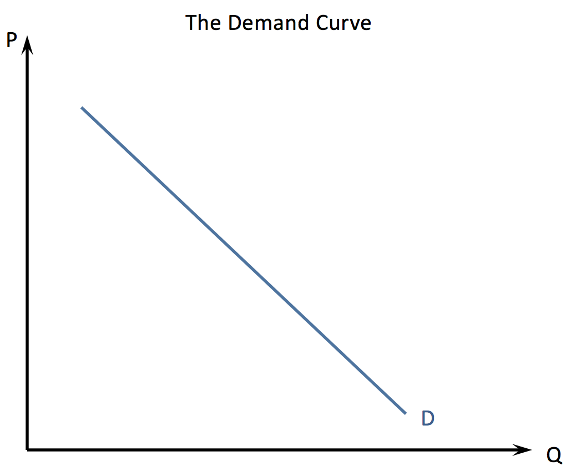
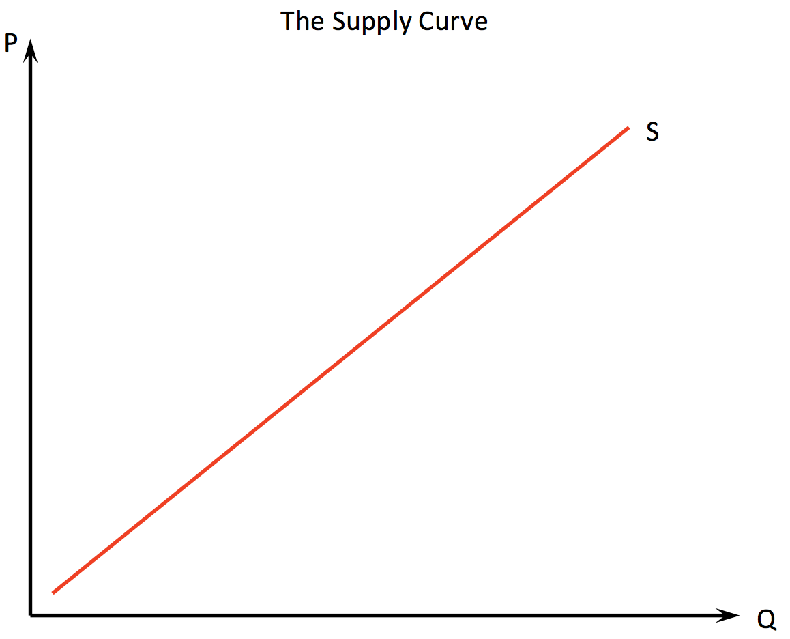
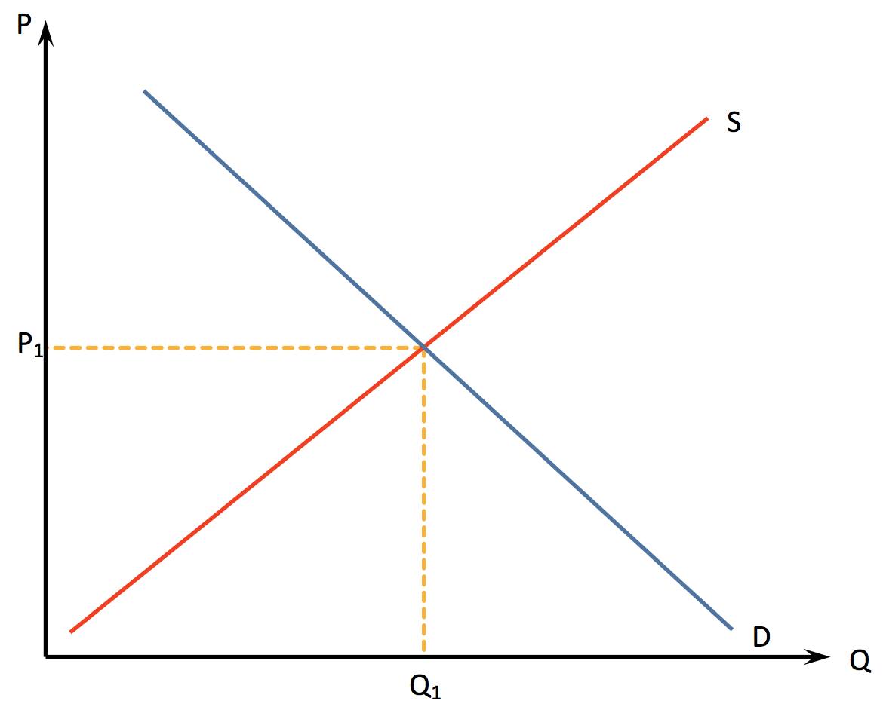

Economics is:
↦ the branch of knowledge concerned with the production, consuption and transfer of wealth
↦ the social science that is concerned with the production, distribution and consumption of goods and services
↦ the study of the forces which determine the decisions that members of an economy make
Micro Economics: The study of economic behaviour of the individual firm, individual group or the individual consumer. It focusses on the factors that affect the decisions made by firms and individuals.
The three economic agents:

The three economic sectors:
Tertiary Sector - The sector where businesses provide services, either to individuals, households or other firms.
Secondary Sector - The sector of the economy that takes raw materials and turns them into finished or part - finished goods.
Primary Sector - The sector of the economy that produces unrefined raw materials.
The 4 factors of production:
Land: All natural resources from earth ie. wood, coal, water, oil, forrests
Labour: Workforce of an economy ie. waiters, teachers, pilots
Capital: Manufactured resources that are used in the production of goods and services ie. cars, hammers, robots
Enterprise: This forms the people that bind together all the other factors of production together to earn profit.
Scarcity - The majority of the worlds resources are scarce. There are only limited amounts of resources. Scarcity means that economic agents can only obtain a limited amount of resources at any given time.
Scarce resources are also known as economic goods. Resources that aren't scarce are called free goods. The problem concerning scarcity is that people have a limited number of needs but have an infinate number of wants. Economics is the stude of the choices that economic agents make when allocating their limited resources.
Three questions were identified by Paul Samuelson on the allocation of resources:
↦ What goods and services should be produced from a society's scarce resources?
↦ How should the productive resources of the economy be used to produce these goods and services?
↦ For whom should these goods and services be allocated to?
This brings up the next issue: the opportunity cost of an economic decision. Opportunity cost is defined as the value of the next best alternative forgone when an economic decision is made. It is measured as: Opportunity cost = $\text{loss} \over \text{gain}$
Ceteris Paribus roughly translates into: "All things remaining equal". This is used for economic modelling to simplify economic senarios to allow for individual variables to be understood. This is done by eliminating all variables other than the one under investigation. Challenging this condition is useful for evaluation.
A positive statement is one that is objective and fact based whilst normative statements are statements that contain a value judgement and cannot be tested.
Specialisation is the production of a limited range of goods by an individual, firm or country in co-operation with othes so that together a complete range of goods are produced.
Specialisation increases the productivity (ouput per unit employed), labour productivity (output per worker) and capital productivity (output per unit of capital employed).
Advantages:
↦ Workers become highly skilled in their tasks
↦ No time is wasted moving from one job to another
↦ Capital equipment can be used continuously
↦ Less time training workers
↦ More choice for workers
↦ Workers can specialise in the areas to which they are most suited for
↦ Leads to higher productivity
↦ Leads to higher standard of living
Disadvantages:
↦ Work can be tedious and monotonous
↦ No ownership of overall process, workers can be alienated and become bored and unproductive
↦ Can lead to high staff turnover and recruitment costs
↦ Can lead to mass unemployment. If demand for specialisation falls, the limited skillset of the workforce makes it difficult fot them to secure employment in other areas
↦ Can cause structural unemployment by replacing workers with machines
↦ A breakdown in chain production can cause chaos
↦ Can place too much power in the hands of employees

Demand is the quantity of a good or service that consumers are willing and able to buy at a given price in a given time period. Individual demand refers to a single consumer in a market. Market demand is the sum of individual demand in the market. Quantity demanded is often denoted as QD. The law of demand states that there is an inverse relationship between price and quantity demanded ie. as price decreases, the quantity demanded expands and as price rises the quantity demanded contracts. This is seen as a movement along the demand curve, NOT a shift. Factors apart from the price of the product can cause a shift of the demand curve.
The factors that affect demand:
↦ Population (size of the market)
↦ Advertising
↦ Substitute prices
↦ Interest rates (for aggregate demand)
↦ Fashion and trends
↦ Incomes
↦ Prices of complementary goods
↦ Speculation
Substitution effect: This states that increased price of goods and services encourages consumers to buy alternative goods.
Income effect: As prices rise, people feel poorer as theyh can't afford to buy as much of the good. Their effective purchasing power of thier income has fallen which can lead to a fall in quantity demanded.
The law of marginal utility: As we increase our quantity consumed, our marginal utility decreases.

Supply is the quantity of a good or service that firms choose to supply at a given price level in a given time period. The law of supply states that there is a positive relationship between price and quantity supplied. Quantitatively, as price increases, quantity supplied increases. Just as with demand, shifts is supply are caused by changes in factors except for price - changes in price causes movements along the curve. Similar to demand, individual supply refers to individual firms whilst market supply is the sum of the individual supply in the market.
Factors of supply:
↦ Price
↦ Expectations
↦ Taxes
↦ Technology
↦ Subsidies
↦ Weather
↦ Cost of production
↦ Profitability of substitutes
↦ Profitability of joint goods
Profit - As the price of a product increases, firms are more willing to produce more of it to maximise profit.
As supply increases the cost of production increases thus the price levels must increase to accomodate this higher cost of production.

Micro Economics
1.1 Competitive Markets: Demand and Supply 1.2 Elasticity 1.3 Government Intervention 1.4 Market Failure 1.5 Theory of the Firm and Market StructuresMacro Economics
2.1 The Level of Overall Economic Activity 2.2 Aggregate Demand and Aggregate Supply 2.3 Macroeconomic Objectives 2.4 Fiscal Policy 2.5 Monetary Policy 2.6 Supply-Side PoliciesInternational Economics
3.1 International Trade 3.2 Exchange Rates 3.3 The Balance of Payments 3.4 Economic Integration 3.5 Terms of TradeDevelopment Economics
4.1 Economic Development 4.2 Measuring Development 4.3 The Role of Domestic Factors 4.4 The Role of International Trade 4.5 The Role of Foreign Direct Investment (FDI) 4.6 The Roles of Foreign Aid and Multilateral Development Assistance 4.7 The Role of International Debt 4.8 The Balance Between Markets and Intervention